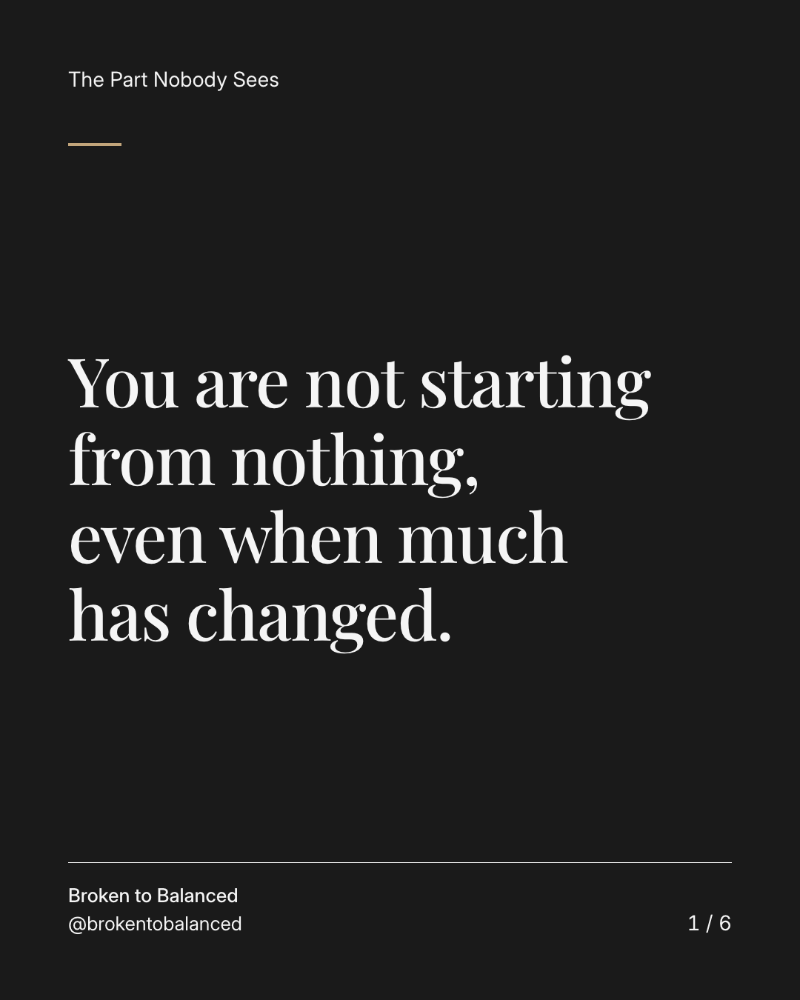
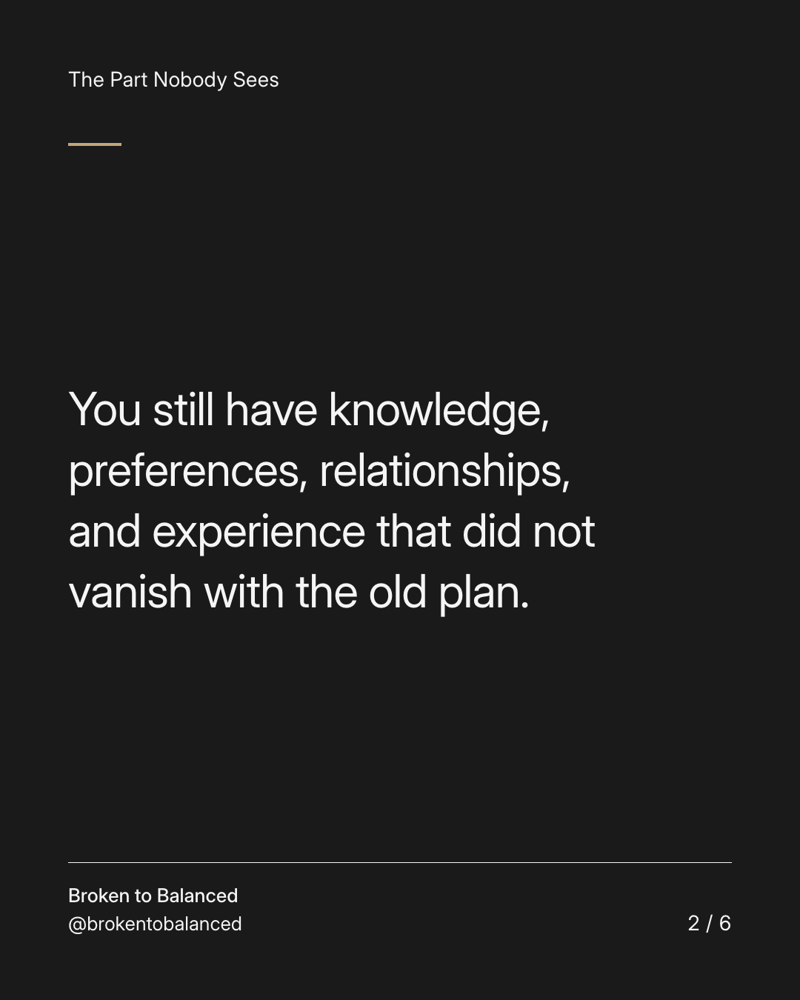
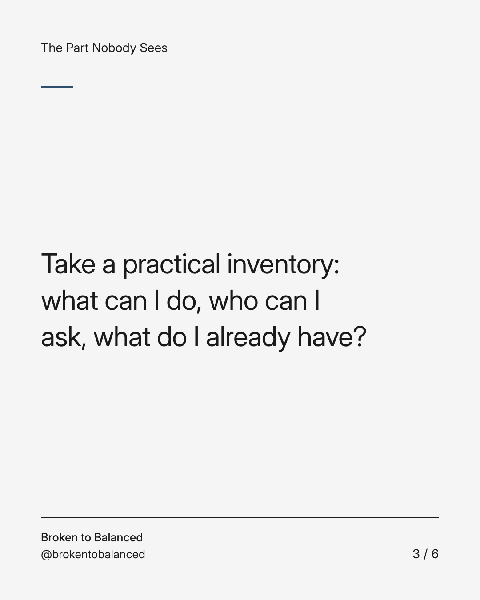
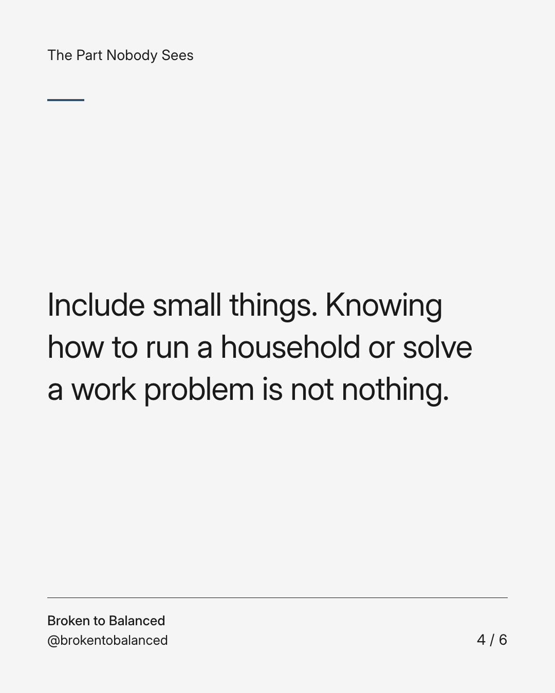
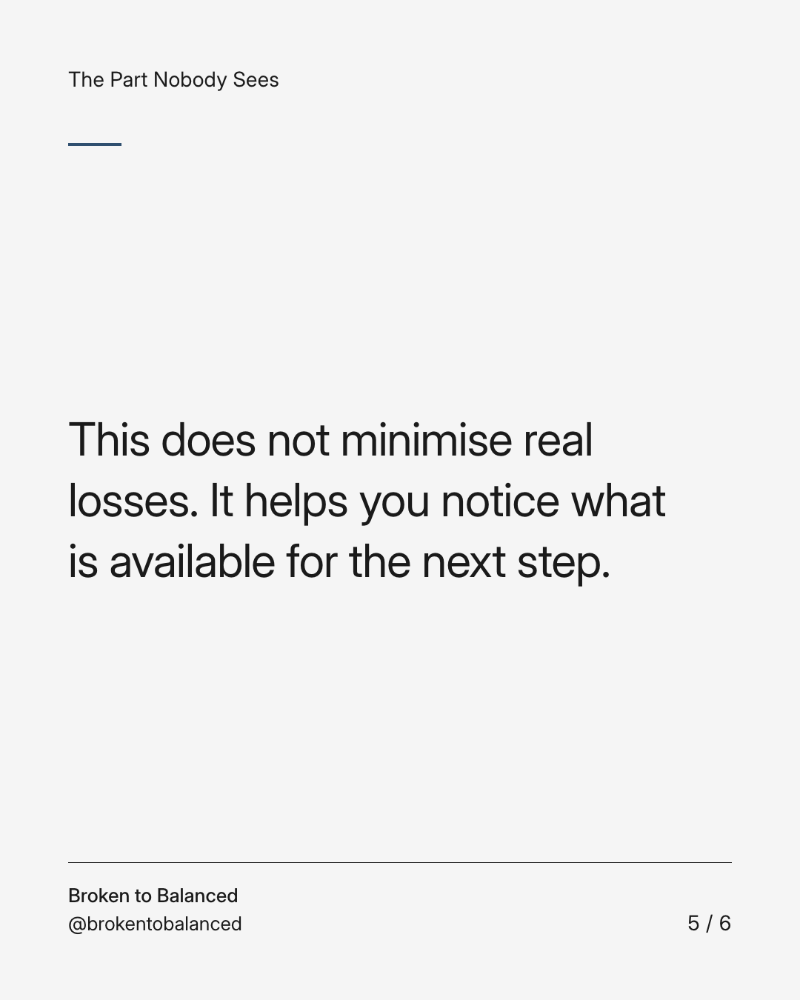
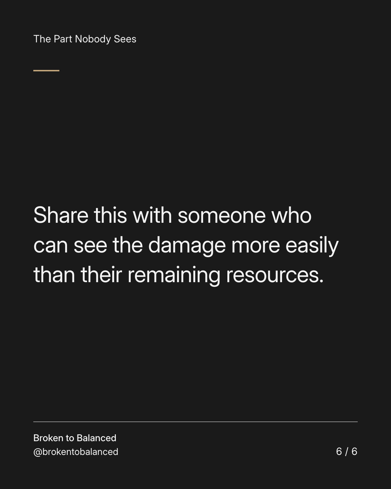

Exact text and accessibility text
You are not starting from nothing, even when much has changed.
Slide 1 of 6. You are not starting from nothing, even when much has changed.


Exact text and accessibility text
You still have knowledge, preferences, relationships, and experience that did not vanish with the old plan.
Slide 2 of 6. You still have knowledge, preferences, relationships, and experience that did not vanish with the old plan.


Exact text and accessibility text
Take a practical inventory: what can I do, who can I ask, what do I already have?
Slide 3 of 6. Take a practical inventory: what can I do, who can I ask, what do I already have?


Exact text and accessibility text
Include small things. Knowing how to run a household or solve a work problem is not nothing.
Slide 4 of 6. Include small things. Knowing how to run a household or solve a work problem is not nothing.


Exact text and accessibility text
This does not minimise real losses. It helps you notice what is available for the next step.
Slide 5 of 6. This does not minimise real losses. It helps you notice what is available for the next step.


Exact text and accessibility text
Share this with someone who can see the damage more easily than their remaining resources.
Slide 6 of 6. Share this with someone who can see the damage more easily than their remaining resources.
Exact caption
Plain-text fallback: select and copy the caption.